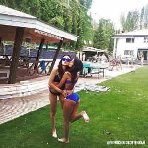

Eusebius is a Prairie Canadian who likes gun rights, traditional values, and economics.


When President Trump visited Saudi Arabia, he concluded an arms deal with the oil-rich kingdom, and toured its Global Centre for Combating Extremist Ideology, a think tank devoted to fighting Islamic terrorism.
If this strikes you as a joke, then it should; Saudi Arabia is the world’s biggest funder of Islamic terrorism. With its billions in oil revenue, it sponsors an anti-Western, jihadist ideology known as Wahhabism. Indeed, your local Sunni mosque could be receiving Saudi money and propaganda. This same ideology is responsible for organizations like al-Qaeda and ISIS.
‘I see much terrorism in your future…’
With this in mind, the United States, and allied countries, should swiftly seek to make alliances with Saudi Arabia’s competitor, Iran.
Of the two Islamic branches, Shia Islam is the superior one. Those countries that have significant Shia populations – Iran, Syria, and Lebanon – are pro-Western and science-friendly. Furthermore, Shiites have scarcely engaged violently with Westerners. Saudi Arabia, by contrast, is largely Sunni.

If you ever walk through fancy shops in Oxford Street or Harrod’s in London, you will be quickly accosted by wealthy Arabs in town for a weekend of shopping. Mostly from nations like Saudi Arabia or UAE, they have little decency, and, like the Chinese, simply care for conspicuous consumption.
This is because Saudi Arabia has no deep culture of its own, unlike Iran, which has millennia of civilization. Iranians that I have met, abroad, are vastly more cultured and well-read than Saudis.
Saudi Arabia is an absolute monarchy, in which the House of Saud maintains power over a compliant population (Saudi citizens are given well-paid sinecures to shut their mouths). There are no meaningful elections or free press.
I heard a story, once, of an Indian man who entered Saudi Arabia, carrying a Bible. His assets were promptly seized, and he was thrown into an open-air prison for two weeks – for being a Christian.
Iran, by contrast, has political elections, and while it is not a full democracy, it protects the rights of minorities – including Jews, Christians, and Zoroastrians.
To be precise, Iran has never attacked another country, at least since Reza Shah Pahlavi consolidated his power and transformed the country in 1921.
Although Iran funds groups like Hezbollah, these organizations have never attacked the United States, and are primarily concerned with Israel. Yet Israel, a small Middle Eastern nation, is no more important to us than the Czech Republic, a similarly sized country.
Iranian leaders have made acerbic remarks about the West, referring to the U.S. as ‘The Great Satan,’ but as we all know, actions matter beyond rhetoric.
Saudi Arabia, on the other hand, has recently been engaged in a barbaric invasion of neighbouring Yemen, with the United States’s full support.
Although Saudi Arabia has 100,000 air-conditioned, vacant tents, it refuses to accept any refugees. Instead, the kingdom would rather have us Westerners accept the economic and social burdens of the Muslim horde.
Iran, to its credit, has put up millions of Afghan refugees within its borders. These migrants have had trouble integrating into Iranian culture, so perhaps Iran can sympathize with us on these issues.

They are cute and will put out (if Westernized). Anyone who has visited Los Angeles can confirm this. Sure, Saudi women may be gorgeous, but if you manage to rip that burka off her body, you have my congratulations, for you are the King of Game. Of course, her father and brothers will likely murder you afterwards.
If Iran develops a nuclear weapon, the only country that should worry is Israel. My response: who cares?
If Iran and Israel both have nuclear weapons then that would return balance-of-power to the Middle East between two nations that refuse to obey the Nuclear Non-Proliferation Treaty. This can only be good for the United States, which has been Israel’s bitch since 1967.
The analogy to game is clear: plate-spinning is an important technique to manage women. Once that whiny girl you have been monogamous with sees that she has competition, she falls into line.
Amidst the shrill songs of global warming activists, the fact is that no technology has surpassed the internal combustion engine, in terms of efficiency and convenience. Electric cars and windmills are no solution. We need petroleum.
Should we be buying our oil from a country that supports terrorism, oppresses religious minorities, and engages in hedonistic consumption? Or should we buy from a country with an ancient culture, that does not actively support violence against the West?
Iran’s Supreme Leader, Ayatollah Khameini, suggested that feminism and sexual libertinism are Zionist ploys to collapse Western civilization.
While his categorizations may be imprecise, the Ayatollah seems acutely aware of the dangerous culture war at play. Singling out human rights groups and liberal think tanks, he said:
…cultural attacks by the enemy are more dangerous than military attacks.
For Donald Trump, I suggest a three-point plan:
If these three points are followed, the West would be safer, wealthier, and we can avoid seeing Saudis on the streets of London.
Read Next: 4 Reasons Why Assad Must Win The Syrian War